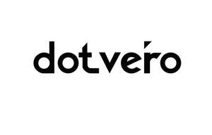

Trade Mark Journal No.2025/024 13 June 2025
UK00004209122 26 May 2025 (18,25)

- Class 18
- Leather wallets; Leather bags and wallets; Leather purses; Leather briefcases; Leather handbags; Leather bags; Leather; Wallets; Card wallets [leatherware]; Leather pouches; Pouches of leather; Briefcases [leather goods]; Leather coin purses; Leather credit card wallets; Leather suitcases; Handbags, purses and wallets; Leather and imitations of leather; Leather and imitation leather; Imitation leather bags; Leather for shoes; Leather straps; Straps (Leather -); Boxes of leather or leather board; Briefcases made of leather; Pocket wallets; Wallets (Pocket -); Leather leashes; Leashes (Leather -); Handbags made of leather; Leather thongs; Leather shopping bags; Leather luggage straps; Leather cloth; Bags made of leather; Girths of leather; Straps of leather [saddlery]; Leather cords; Studs of leather; Leather boxes; Boxes of leather; Belts (Leather shoulder -); Leather shoulder belts; Saddlery of leather; Laces (Leather -); Leather laces; Tanned leather; Bags made of imitation leather; Nappy wallets; Pouches, of leather, for packaging; Moleskin [imitation of leather]; Moleskin [imitation leather]; Purses [leatherware]; Handbags made of imitations leather; Leather for harnesses; Leather luggage tags; Polyurethane leather; Pocketbooks [handbags]; Leather cases for keys; Wrist-mounted wallets; Key-cases of leather and skins; Briefcases [leatherware]; Shoulder belts [straps] of leather; Billfolds; Leather for furniture; Imitations of leather; Leather cord; Wallets for attachment to belts; Valves of leather; Bags [envelopes, pouches] of leather, for packaging; Bags [envelopes, pouches] of leather for packaging; Adhesive tags of leather for bags; Bags [envelopes, pouches] for packaging of leather; Tool bags of leather, empty; Synthetic leather; All-purpose leather straps; Labels of leather; Garment bags for travel made of leather; Straps (Leather shoulder -); Leather shoulder straps; Wallets with card compartments; Hat boxes of leather; Boxes of leather (Hat -); Card wallets; Travelling bags made of imitation leather; Leather or leather-board boxes; Leather cases; Bands of leather; Travelling bags made of leather; Imitation leather; Leather (Imitation -); Wallets of precious metal; Vegan leather; Chin straps, of leather; Luggage, bags, wallets and other carriers; Sew-on tags of leather for clothing; Straps made of imitation leather; Envelopes, of leather, for packaging.
- Class 25
- Leather jackets; Leather shoes; Leather clothing; Clothing of leather; Leather (Clothing of -); Leather belts [clothing]; Leather waistcoats; Trousers of leather; Leather pants; Leather garments; Leather coats; Leather slippers; Clothing of imitations of leather; Leather (Clothing of imitations of -); Belts made of leather; Leather dresses; Leather suits; Suits of leather; Suede jackets; Belts made from imitation leather; Clothing made of leather; Leather headwear; Motorcyclists' clothing of leather.
Umer Waheed